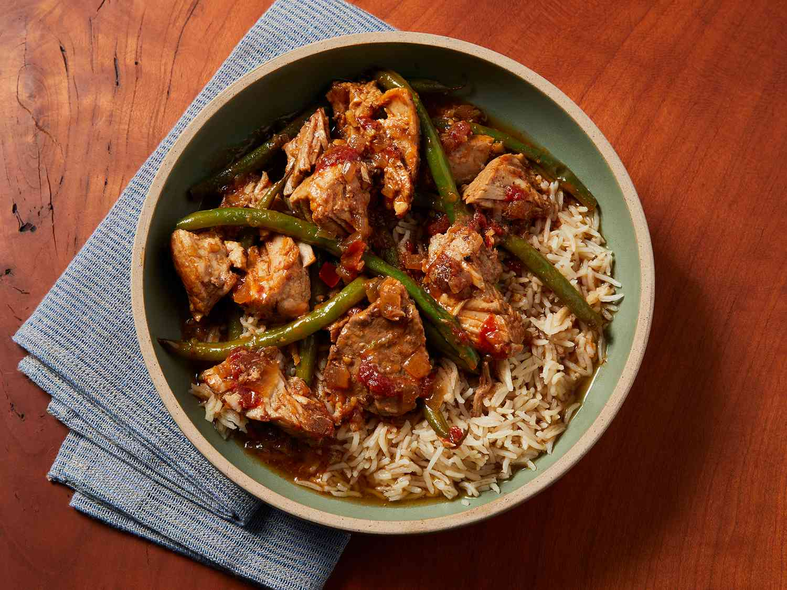

Pork Sinigang

Ingredients
- Pork
- Papaya
- Sitaw
- Kangkong
- Tomato
Steps
- Begin by washing pork spare ribs in cold running water to remove any visible impurities.
- Then, place pork ribs submerge in a medium pot with a liter of water. Bring to a boil without covering the pot and allow the scum to float to the surface.
- Meticulously remove the scums from the surface of the water using a slotted spoon or a spatula.
- After the broth clears up, turn you heat to medium setting, then it’s time toss in your onions and tomatoes to add flavor to the broth.
- Cover your pot and let it simmer to fully cook your meat. Use a fork to pierce the meat so that the flavors would also enter the meaty parts of the spare ribs.
- Start by adding the sitaw, kangkong stalks and talong into the pot and cook until these turn dark green.
- Add in your siling sigang, kangkong leaves and the Knorr Sinigang sa Sampaloc Mix. Stir and let it simmer. It should be done in about 2-3 minutes.